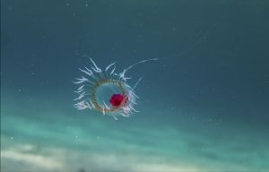
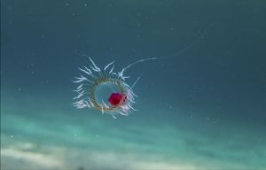
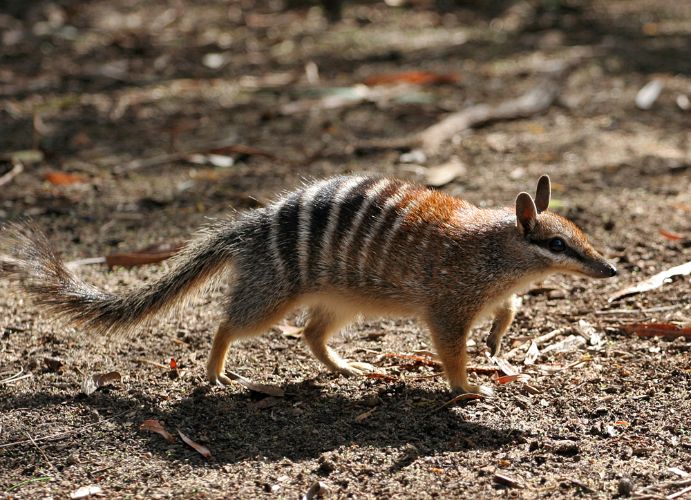
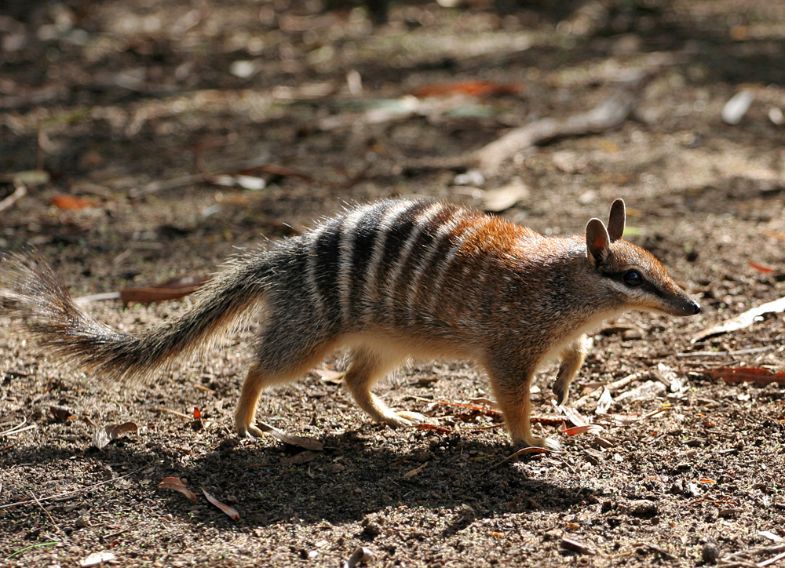

All Beautiful Creatures
- Axolotl,Ambystoma mexicanum,https://en.wikipedia.org/wiki/Axolotl
- Amazonian Royal fly catcher,Onychorhynchus coronatus,https://en.wikipedia.org/wiki/Amazonian_royal_flycatcher
- Amur Leopard
- Barreleye,Opisthoproctus soleatus,https://en.wikipedia.org/wiki/Barreleye
- Barreleye,Macropinna microstoma,https://en.wikipedia.org/wiki/Macropinna
- Blue Dragon, Glaucus atlanticus, https://en.wikipedia.org/wiki/Glaucus_atlanticus
- Babirusa
- Coconut crab,Birgus latro,https://en.wikipedia.org/wiki/Coconut_crab
- Colugo,Galeopterus variegatus,https://en.wikipedia.org/wiki/Colugo
- Dugong,Dugong dugon,https://en.wikipedia.org/wiki/Dugong
- Echidna, Zaglossus attenboroughi,https://en.wikipedia.org/wiki/Echidna
- Fanftooth,Anoplogaster cornuta,https://en.wikipedia.org/wiki/Fangtooth
- Gharial,Gavialis gangeticus,https://en.wikipedia.org/wiki/Gharial
- Giant vinegaroon or grampus,Mastigoproctus giganteus,https://en.wikipedia.org/wiki/Mastigoproctus_giganteus
- Hispaniolan solenodon,Solenodon paradoxus,https://en.wikipedia.org/wiki/Hispaniolan_solenodon
- Hawaiian Cleaner Wrassee,Labroides phthirophagus,https://en.wikipedia.org/wiki/Hawaiian_cleaner_wrasse
- Hummingbird hawk moth,Macroglossum stellatarum,https://en.wikipedia.org/wiki/Hummingbird_hawk-moth
- Immortal jellyfish,Turritopsis dohrnii,https://en.wikipedia.org/wiki/Turritopsis_dohrnii
- Immortal jellyfish,Turritopsis nutricula,https://en.wikipedia.org/wiki/Turritopsis_nutricula
- Janolus, Janolus fuscus, https://en.wikipedia.org/wiki/Janolus_fuscus
- Kinkajou, Potos flavus,https://en.wikipedia.org/wiki/Kinkajou
- Leafhopper,Issus coleoptratus,https://en.wikipedia.org/wiki/Issus_coleoptratus
- Lowland Streaked Tenrec,Hemicentetes semispinosus,https://en.wikipedia.org/wiki/Lowland_streaked_tenrec
- Marabou stork,Leptoptilos crumenifer,https://en.wikipedia.org/wiki/Marabou_stork
- Numbat,Myrmecobius fasciatus,https://en.wikipedia.org/wiki/Numbat
- Orchid mantis,Hymenopus coronatus,https://en.wikipedia.org/wiki/Hymenopus_coronatus
- ak treehopper,Platycotis vittata,https://en.wikipedia.org/wiki/Platycotis_vittata
- Pink fairy armadillo, Chlamyphorus truncatus, https://en.wikipedia.org/wiki/Pink_fairy_armadillo
- Philippine tarsler
- Quokka,Setonix brachyurus,https://en.wikipedia.org/wiki/Quokka
- Red-lipped batfish,Ogcocephalus darwini,https://en.wikipedia.org/wiki/Red-lipped_batfish
- Rhino Beetle
- Sarcastic Fringehead,Neoclinus blanchardi,https://en.wikipedia.org/wiki/Sarcastic_fringehead
- Striped Pyjama Squid,Sepioloidea lineolata,https://en.wikipedia.org/wiki/Sepioloidea_lineolata
- Tasselled wobbegong,Eucrossorhinus dasypogon,https://en.wikipedia.org/wiki/Tasselled_wobbegong
- Thorny Devil,Moloch horridus,https://en.wikipedia.org/wiki/Thorny_devil
- Tube-eye,Stylephorus chordatus,https://en.wikipedia.org/wiki/Stylephorus
- Umbrellabird,Cephalopterus penduliger,https://en.wikipedia.org/wiki/Long-wattled_umbrellabird
- Vinegaroons,Family: Thelyphonidae,https://en.wikipedia.org/wiki/Thelyphonida
- Viperfish,
- Venezuelan Poodle Moth,
- Walking Catfish,Clarias batrachus,https://en.wikipedia.org/wiki/Walking_catfish
- Xoloitzcuintle,Canis lupus familiaris,https://en.wikipedia.org/wiki/Xoloitzcuintle
- Yeti.
- Zorilla,Ictonyx striatus,https://en.wikipedia.org/wiki/Striped_polecat


 

.jpg) 
